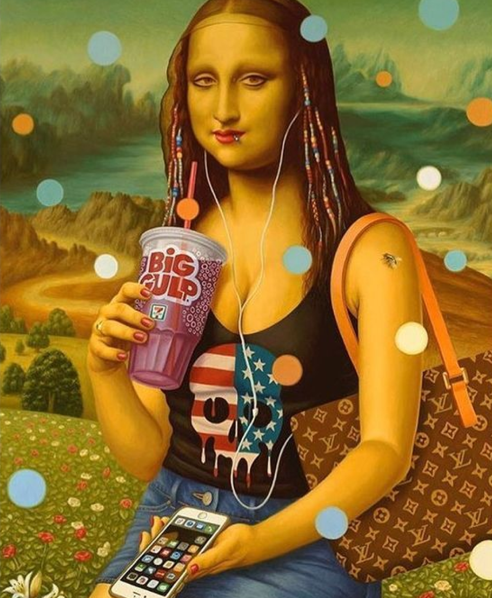
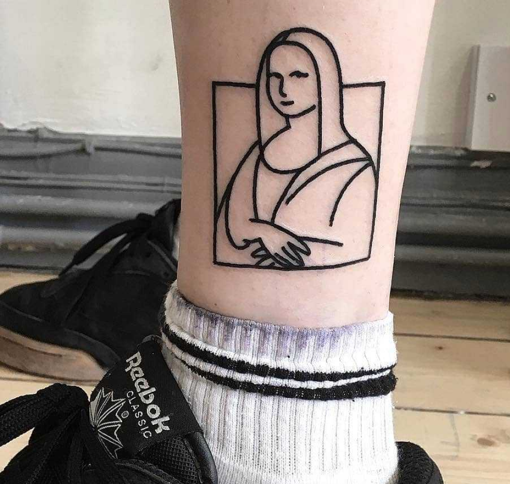
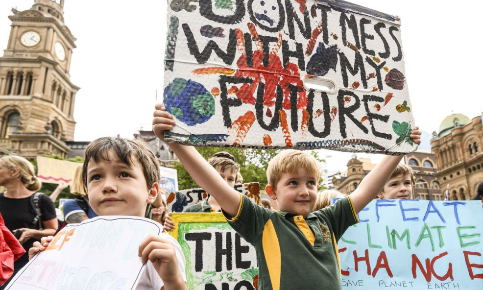

Aereum hopes to bring back human values and independence to digital interfaces, setting people free to pour innovation, personality and experimentation into their interactions
1
Interfaces are not neutral
The character of an interaction is always heavily altered by the interface.

Some interfaces promote uniformity and encourage familiar, popular choices...
... lacking in warmth and human exchange

While others encourage diversity, connection, people’s curiosity and experimentation
Shouldn't digital music discovery be at least as surprising and varied as in a record store, garage bands and underground singers found by chance, maybe pointed out by a bypasser? Unexpected choices leading to unexpected experiences!
And so with movies, photography, literature... How can these seem somehow less varied , colourfull and diverse today, despite the amazing reach rendered by the digital medium?
Interfaces.

We must reclaim interfaces to reclaim human values lost, depreciated and forgotten by the digital environment.
2
Content over form
Content should not adjust to fit a format. It must be the other way around. So we propose content exchange through a protocol. :)

Content sharing adjusted to app /provider frame






Content sharing on a protocol,
free from a single app / provider
interface
Long ago people came up with a protocol to make machines communicate with each other. On top of that the internet was born.
Aereum proposes a protocol to make humans digitally communicate with each other, no intermediary plataform needed. Ideas free from the dictatorship of provider’s formats.
Content is yours to decide how to share it and whom to share it with! Your ideas, your choices!
Create content free to circle around and be invented and reinvented. No frame to limit your imagination.
3
Digital stages of a global festival
Aereum protocol enpowers you to take a stage online and be seen by everyone that matters to you, without the need for the intermediary plataforms.
Today we stumble and adapt to find the right place to interact with our audiences


And that’s because we are people...
...speak
...share
and people talk...
teach and learn.
...exchange
We should have it all in one single digital venue. Why not? When freed from the prision of preset interfaces, interactions may take all and any shapes, audiences flexible to follow the contents they’d like better.
Stages are the analog image that inspired Aereum’s digital exchange medium. They are native and neutral human interaction grounds, flexible to embrace most types of human interactions.



People create
The protocol enpowers you to take your stage online and be seen by the audience that chose to follow you without the intermediary to dictate rules for content format and distribution. Without having to adapt your interaction to your interface!
A set of rules agreed upon by different participants of a network to ensure direct digital communication. That’s the protocol, Aereum’s protocol .